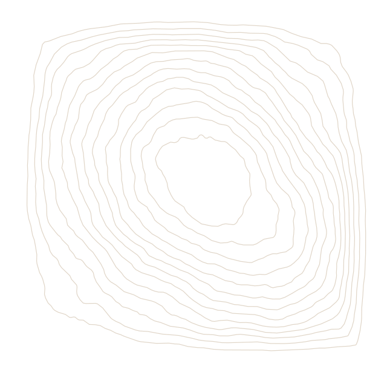
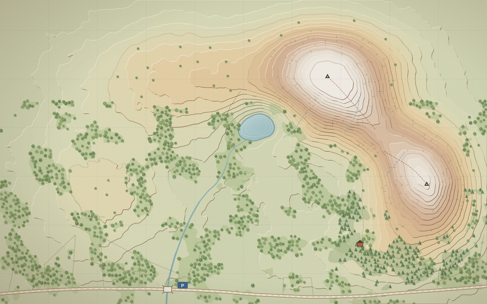

Best season
May to October. The col holds snow into April and the Beck floods the footbridge after a wet week — check our conditions page before you go.

Trail guide No. 14Hollin Fells
A long, honest day out: beckside woods, a tarn that holds the whole sky, one lung-busting pull to the col and a lazy, larch-lined stroll back to the car. Bring a flask.
Scroll to start walking

11.4 km later
May to October. The col holds snow into April and the Beck floods the footbridge after a wet week — check our conditions page before you go.
Refill at Mirror Tarn's outflow, then filter it: the sheep got there first. Nothing after the col until Larch Hut (cash only, closes 16:00).
Bus 78 stops at Hollin Bridge four times a day. The car park fills by 9 on Saturdays; the honesty box takes coins, cards and flapjack.